처음 만들 때 쓰는 디자인 스킬 다섯 개
영상은 14개 도구를 네 챕터로 나눠요. 아래 화면 왼쪽 노란 칸이 챕터 이름이고, 오른쪽 회색 글씨가 그 챕터에 들어가는 도구들이에요. 디자인 스킬이 다섯 개로 가장 많고, 작업 공간은 두 개뿐이에요.
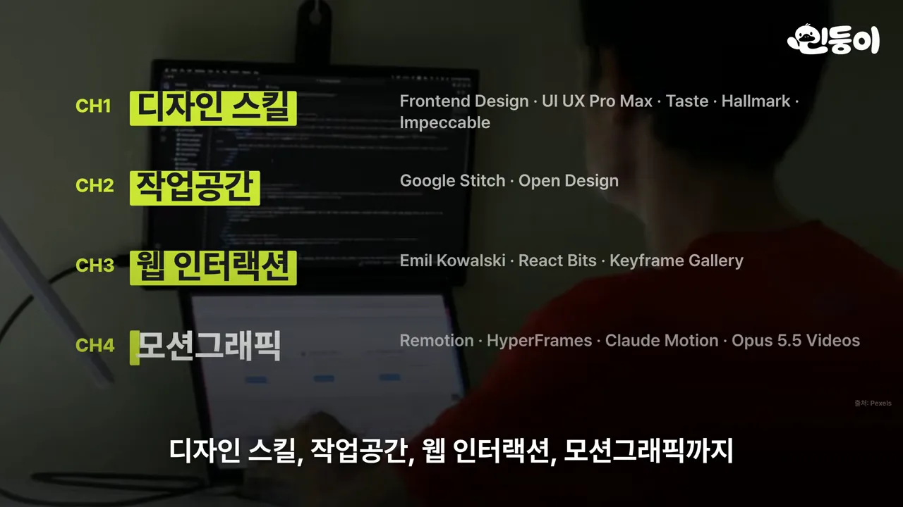
첫 챕터의 다섯 개는 모두 에이전트 스킬이에요. Claude Code나 Codex, Cursor 같은 AI 코딩 도구에 넣어 두면, AI가 웹사이트를 만들 때 이 지침을 따라 디자인해요. 다섯 개가 디자인을 이끄는 방법이 서로 달라서 표로 먼저 정리했어요.
| 스킬 | 디자인을 정하는 방법 | 영상이 꼽은 특징 |
|---|---|---|
| Frontend Design | 콘셉트를 먼저 정하고 나머지를 맞춰요 | Anthropic 공식, 처음 쓰는 사람에게 추천 |
| UI(User Interface) UX(User Experience) Pro Max | 업종을 말하면 어울리는 조합을 골라요 | 스타일 79가지, 앱 개발(Flutter, SwiftUI)도 지원 |
| Taste | 세 숫자(1~10)로 분위기를 조절해요 | 같은 페이지를 숫자만 바꿔 다르게 |
| Hallmark | 48가지 테마 중 하나를 골라 시작해요 | AI 티와 모바일 잘림을 검사 |
| Impeccable | 명령어로 부분부분 고쳐요 | 명령어 24가지, 17개 도구 지원 |
Frontend Design — 뻔한 패턴부터 피해요
Anthropic이 직접 만든 스킬이에요. 화면에 띄운 문단은 스킬 파일의 한 구절이에요. 노란 형광펜 부분이 'the commonest tells of a generated page', 곧 AI가 만든 페이지라는 가장 흔한 티라는 뜻이에요. 그 아래 세 줄이 피할 것들이에요. 제목에서 한 단어만 기울이거나 색을 바꾸기, 라벨을 전부 대문자로 쓰기, 본문 위에 쓸데없는 작은 라벨 달기예요.
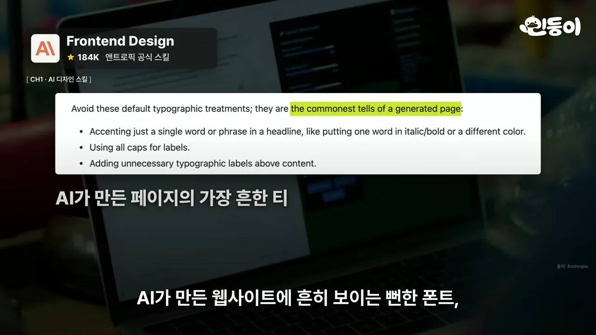
피하는 것만 있는 건 아니에요. 미니멀, 레트로, 미래지향처럼 콘셉트를 먼저 하나 정하고, 폰트·색·배치·애니메이션을 그 콘셉트에 한 번에 맞춰요. 아래 화면의 창 세 개가 그 콘셉트 후보예요.
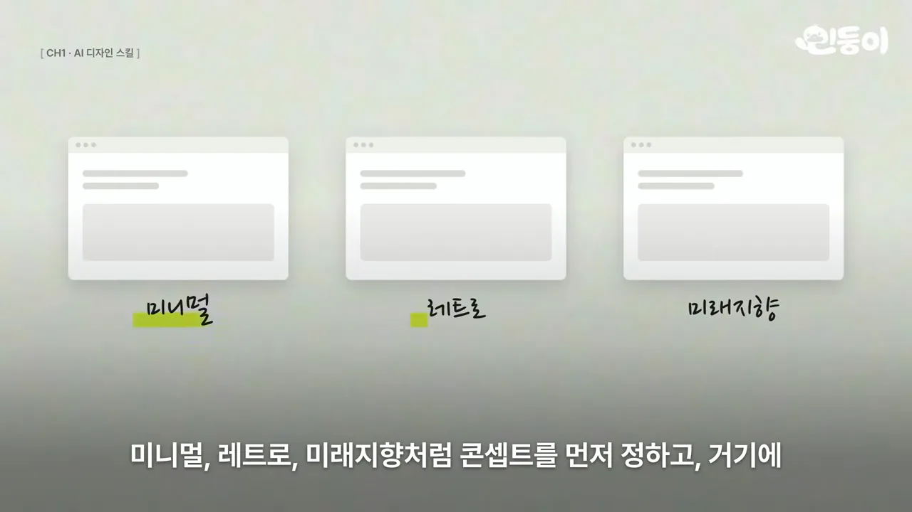
이름에 Anthropic이 붙어 있지만 스킬 파일 하나라서 Codex나 Cursor에도 그대로 넣을 수 있어요. 영상은 디자인 스킬을 처음 써 본다면 여기서 시작하라고 해요.
UI UX Pro Max — 업종에 맞춰 골라 줘요
깃허브 별이 14만 개(140k)로, 이번 목록에서 가장 많아요. 스타일 79가지와 색상·폰트 조합, 차트 유형을 데이터로 갖고 있어요. 그래서 '금융 대시보드'라고만 해도 금융에 어울리는 색, 폰트, 차트를 골라 사이트 전체 규칙으로 묶어 줘요.
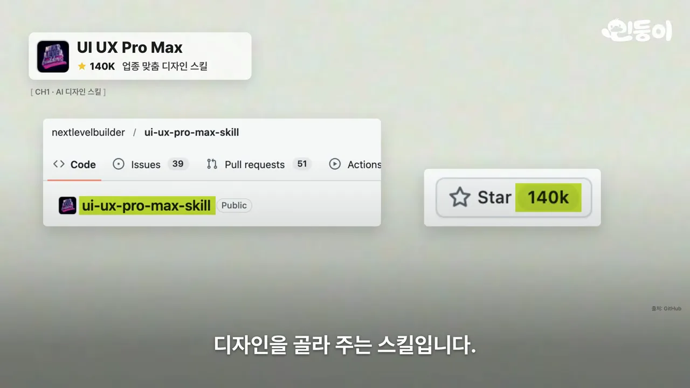
웹만이 아니라 Flutter, SwiftUI 같은 앱 개발도 지원해요. 설치할 수 있는 AI 코딩 도구는 20개가 넘어요.
Taste — 세 숫자로 분위기를 돌려요
Taste는 디자인을 세 가지 수치로 조절해요. 아래 화면 왼쪽 슬라이더 세 개가 그거예요. 과감함은 레이아웃을 얼마나 과감하게, 움직임은 애니메이션을 얼마나 많이, 밀도는 정보를 얼마나 빽빽하게 넣을지예요. 각각 1부터 10까지예요. 지금은 과감함을 높이 올려서 오른쪽 페이지가 비대칭으로 바뀐 상태예요.

Claude Code와 Codex 모두 플러그인으로 설치돼요.
Hallmark — 테마를 고르고, AI 티를 검사해요
Hallmark는 테마를 골라 시작해요. 종이 질감부터 타이포그래피 중심까지 테마가 48가지 있어요. 요청하면 그중 어울리는 세 가지를 먼저 보여 줘요. 아래 화면 가운데 겹쳐 놓은 페이지들이 서로 다른 테마로 만든 예시예요.
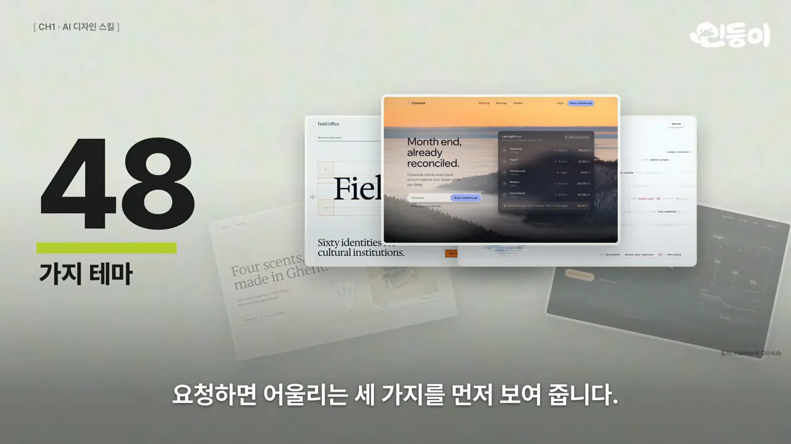
검사 기능도 붙어 있어요. 아래 화면에서 'AI 티' 말풍선이 두 군데를 가리켜요. 위쪽은 제목 위에 붙은 작은 문구('INTRODUCING NOVA AI')이고, 아래쪽은 똑같은 모양으로 늘어선 카드 세 장이에요. 모바일 화면에서 잘리는 곳도 잡아 줘요.

Impeccable — 명령어로 부분만 고쳐요
Impeccable은 정해진 명령어로 디자인을 고쳐요. bolder는 더 과감하게, quieter는 더 차분하게, colorize는 색을 더하고, polish는 디테일을 다듬는 식이에요. 명령어는 모두 24가지예요. 아래 화면은 그중 polish를 소개하는 장면이에요.
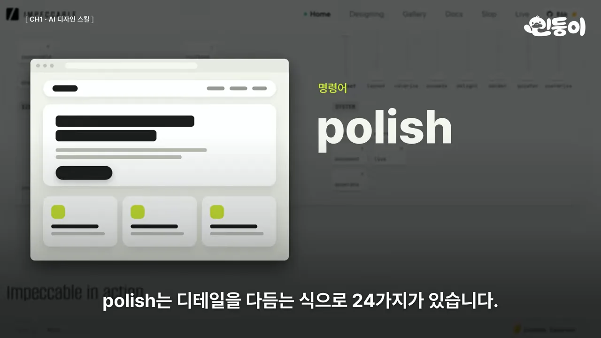
좋은 점은 '좀 더 세련되게' 같은 막연한 요청을 안 해도 된다는 거예요. 아래 화면의 페이지처럼 위쪽 첫 화면과 아래쪽 정보가 빽빽한 표 구간이 있다면, 첫 화면은 bolder, 표 구간은 quieter처럼 부분마다 다르게 지시할 수 있어요.
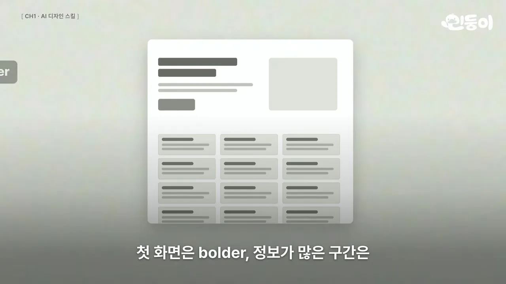
영상은 Taste와 Impeccable의 차이를 한 문장으로 정리해요. Taste는 사이트 전체 분위기를 돌리고, Impeccable은 원하는 부분만 콕 집어 고쳐요. 이 차이를 그림으로 옮기면 이래요.
Impeccable은 Claude Code, Codex, Cursor, Gemini CLI(Command-Line Interface) 등 17개 도구를 지원해요.
화면을 보며 만드는 작업 공간
두 번째 챕터부터는 스킬 파일이 아니라 화면을 보면서 직접 디자인하는 도구예요. 코드보다 결과 화면을 먼저 보고 싶을 때 쓰는 쪽이에요.
Google Stitch — 앱 화면 시안을 여러 장
Google Stitch는 말로 설명하면 앱 화면 시안을 여러 장 뽑아 줘요. 아래 화면처럼 '일정 관리 앱'이라고 하면 달력 화면이 나오고, 할 일 목록과 상세 화면이 이어서 나와요.
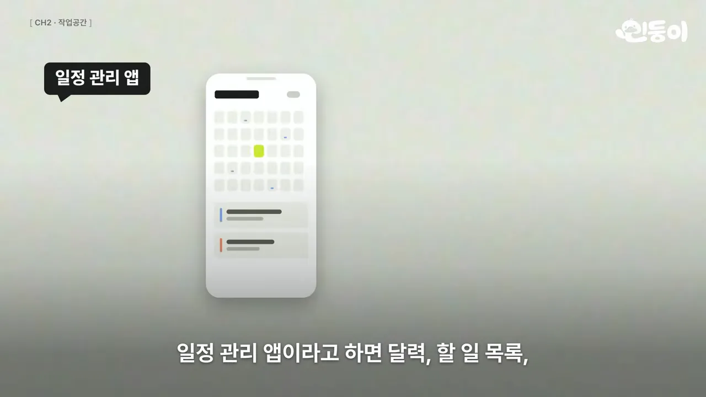
시안들은 한 판에 나란히 펼쳐지고, 대화로 고칠 수 있어요. 영상이 꼽은 가장 큰 장점은 그다음이에요. 화면끼리 연결해서 버튼을 누르면 다음 화면으로 넘어가는 프로토타입까지 만들어 줘요. 아래 화면의 휴대폰 세 대가 달력 → 할 일 목록 → 상세 화면 순서예요.
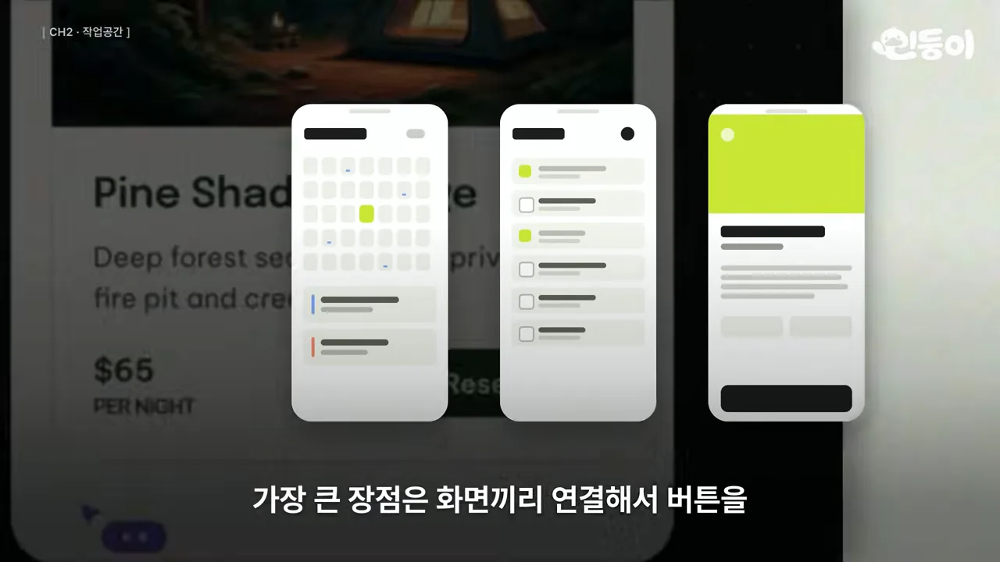
정한 디자인은 개발로 바로 넘길 수 있어요. 아래 화면 왼쪽 문서가 DESIGN.md예요. 색 칩 네 개와 글줄이 디자인 규칙을 뜻해요. 이 파일로 저장하거나 MCP(Model Context Protocol)로 연결해서 오른쪽 Claude Code, Codex에 넘겨요.
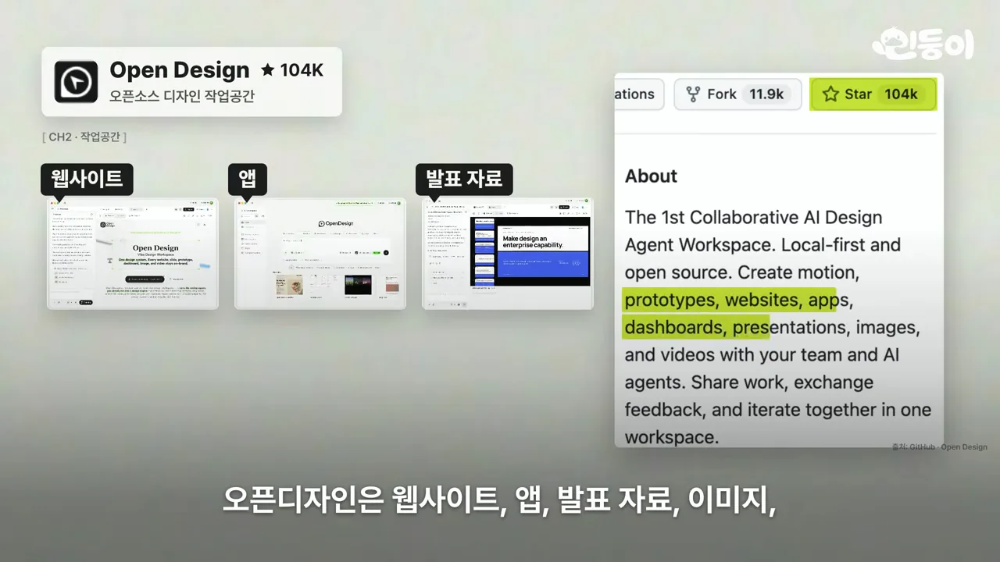
Open Design — 디자인 작업 전체를 한곳에
Open Design은 웹사이트, 앱, 발표 자료, 이미지, 모션 그래픽까지 한곳에서 만드는 오픈소스 작업 공간이에요. 아래 화면 왼쪽에 웹사이트·앱·발표 자료로 만든 결과가 나란히 있어요. 오른쪽은 깃허브 소개 글인데, 노란 형광펜 부분이 프로토타입, 웹사이트, 앱, 대시보드, 발표 자료예요.
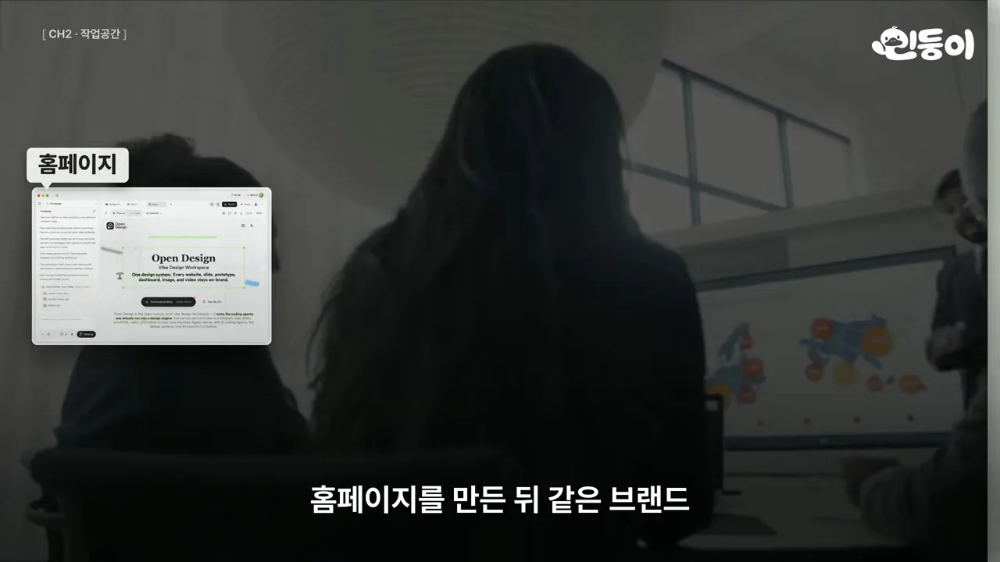
Claude Code, Codex, Cursor를 붙여서 쓰고, 안에 HyperFrames가 들어 있어 MP4(MPEG-4 Part 14) 영상까지 나와요. HyperFrames는 넷째 챕터에서 따로 소개해요.
영상은 두 도구를 이렇게 나눠요. 아래 화면 왼쪽 Google Stitch 밑에는 '앱 화면 시안', 오른쪽 Open Design 밑에는 '디자인 작업 전체'라고 적혀 있어요.
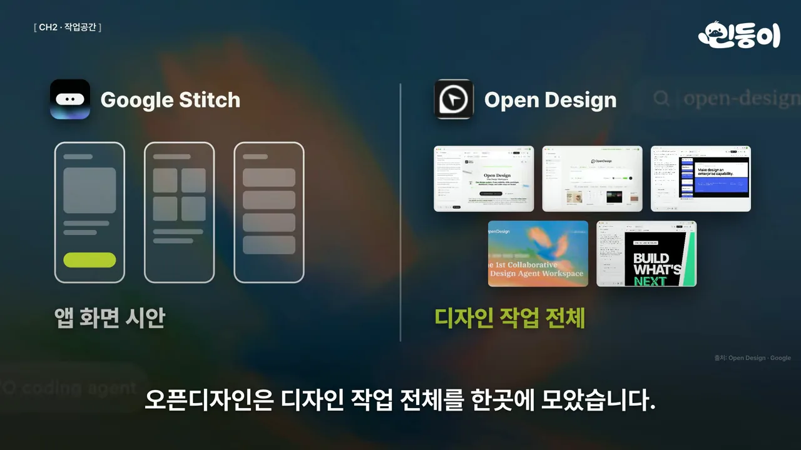
웹사이트에 움직임 넣기
셋째 챕터는 웹사이트에 움직임을 넣는 도구예요. 하나는 움직임을 계산하고 검사하는 스킬, 하나는 완성된 효과 모음, 하나는 참고할 실제 사례 모음이에요.
Emil Kowalski 스킬 — 움직임을 계산하고 검사해요
Vercel과 Linear에서 디자인 엔지니어로 일한 Emil Kowalski의 애니메이션 노하우를 담은 스킬 모음이에요. 팝업이나 메뉴가 얼마나 빨리 나오고 어떻게 멈추는지 같은 작은 차이를 다뤄요.
아래 화면 왼쪽이 animate 스킬이에요. 그래프는 시간에 따른 속도를 그린 것으로, 처음에 빠르게 올라갔다가 점점 완만해지는 감속 곡선이에요. animate는 이런 속도와 감속, 이징까지 계산해서 움직임을 만들어요. 오른쪽 리뷰 스킬은 이미 있는 애니메이션에서 어색한 부분을 찾아내요.
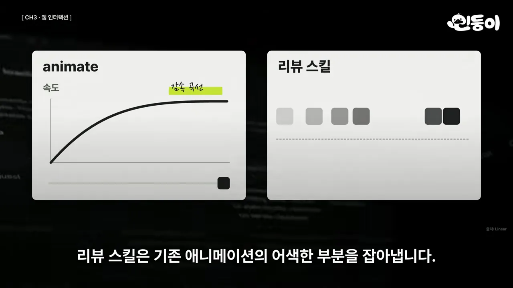
리뷰 스킬은 움직임을 더 넣을 곳만 찾지 않아요. 오히려 빼야 할 곳까지 짚어 줘요. 아래 화면의 '빼기' 말풍선과 노란 표시 네 개가 페이지에서 움직임을 덜어낼 자리들이에요.
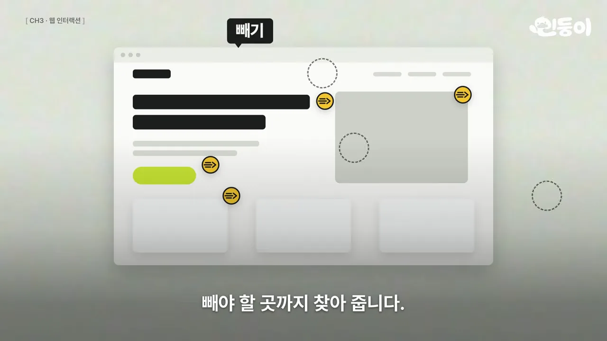
설치 명령 한 줄이면 지금 쓰는 AI 코딩 도구에 들어가요.
React Bits — 완성된 효과를 골라 써요
React Bits는 이미 만들어진 효과를 골라 가져다 쓰는 컴포넌트 모음이에요. 한 글자씩 등장하는 텍스트, 마우스를 따라오는 배경, 3D 카드, 파티클 같은 효과가 215개가 넘어요. 아래 화면 타일 하나하나가 효과 하나예요. 'Hello, you!' 타일이 글자 효과, 검은 구슬이 파티클 효과예요.
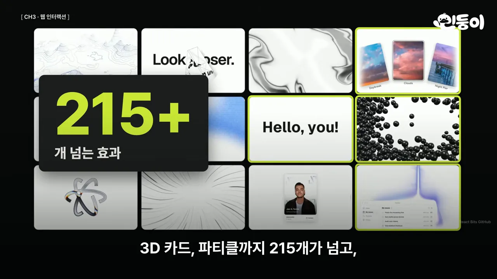
쓰는 법은 단순해요. 마음에 드는 효과를 골라 AI 코딩 도구에 넣어 달라고 하면 끝이에요. 영상은 포트폴리오나 랜딩 페이지를 화려하게 꾸밀 때 특히 좋다고 해요.
Keyframe Gallery — 말 대신 사례를 보여 줘요
Keyframe Gallery는 실제 서비스에 쓰인 UI 애니메이션을 모은 사이트예요. 화면 전환, 메뉴가 펼쳐지는 방식, 버튼 반응을 실제 움직임으로 볼 수 있어요.
요점은 요청하는 방식이에요. 아래 화면 위쪽 '부드럽게 해 줘'에 줄이 그어져 있고, 그 아래 '이렇게 만들어 줘'가 오른쪽 사례 화면을 가리켜요. 막연한 형용사 대신 마음에 드는 사례를 보여 주라는 뜻이에요.
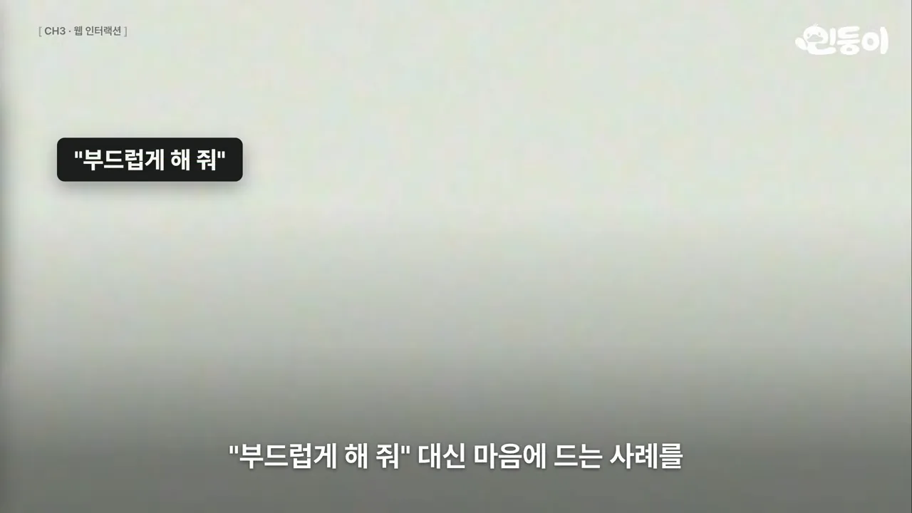
영상으로 뽑는 모션 그래픽
여기부터는 웹사이트가 아니라 영상 파일로 뽑는 모션 그래픽 도구예요. 네 도구가 영상을 만드는 재료가 서로 달라서 먼저 표로 비교했어요.
| 도구 | 무엇으로 만드나요 | 잘 맞는 경우 |
|---|---|---|
| Remotion | React 코드 | 같은 포맷의 영상을 숫자·문구만 바꿔 반복 |
| HyperFrames | HTML과 CSS(Cascading Style Sheets) | 장면을 말로 설명해 짧은 영상 만들기 |
| Claude Motion | Claude와 대화(코드를 직접 안 만져요) | 보고서 숫자, 제품 사용법 애니메이션 |
| Awesome Opus 5.5 Videos | 남이 쓴 프롬프트 | 마음에 드는 장면의 프롬프트를 가져와 바꾸기 |
Remotion — React 코드로 영상을 찍어 내요
Remotion은 React 코드로 영상을 만드는 도구예요. 강점은 템플릿이에요. 아래 화면 왼쪽 큰 화면이 한 번 짜 둔 순위 막대와 통계 그래프이고, 오른쪽 작은 화면 세 개가 거기서 숫자와 문구만 바꿔 찍어 낸 영상들이에요.

그래서 매주 같은 포맷으로 올리는 영상에 특히 강해요. AI 코딩 도구용 공식 스킬도 있어요.
HyperFrames — 같은 일을 HTML로
HyperFrames는 HeyGen이 공개한 오픈소스예요. 아래 화면의 저장소 소개 문구 'Write HTML. Render video.'가 그대로 설명이에요. HTML을 쓰면 영상으로 렌더링해 줘요. 오른쪽 검은 상자는 HTML·CSS 코드를 뜻해요.
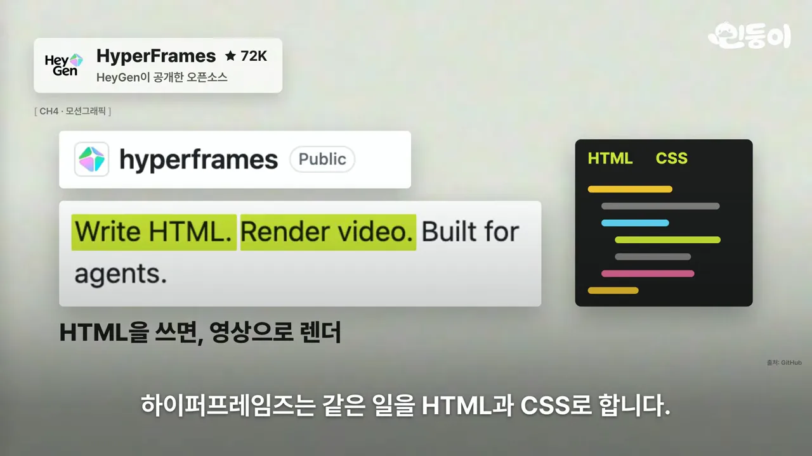
코드를 직접 짜지 않아도 돼요. 아래 화면 말풍선처럼 '10초 제품 소개, 제품명이 나온 뒤 기능 세 개가 차례로' 하고 장면을 설명하면, AI가 움직임을 만들고 MP4로 내보내요. 오른쪽 카드 네 장이 제품명과 기능 1·2·3 장면이에요.
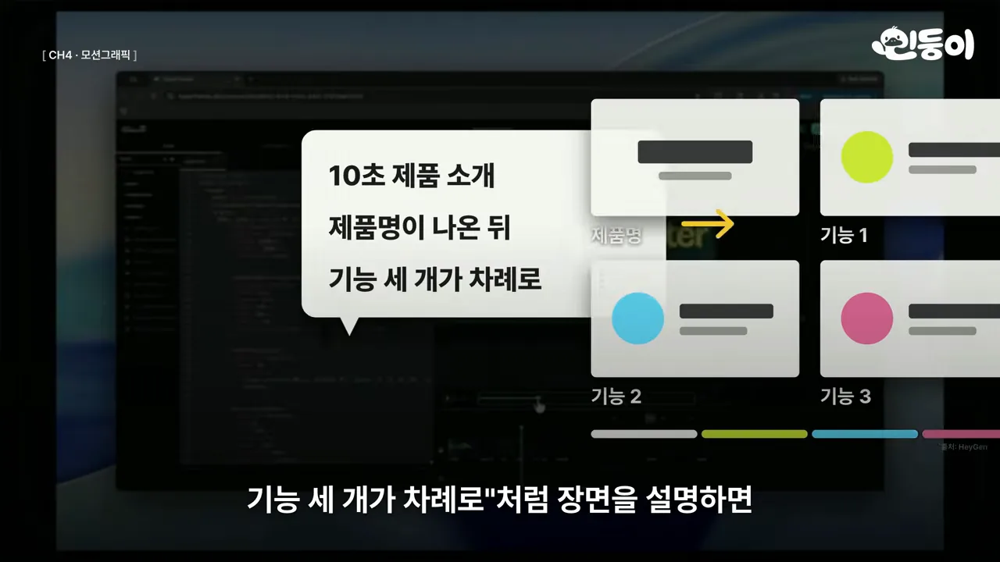
Claude Code, Codex, Cursor, Gemini CLI에서 쓸 수 있어요. 두 도구 중 무엇을 고를지는 아래 화면 한 장이 정리해요. 위쪽 React 로고는 Remotion으로, 아래쪽 HTML은 HyperFrames로 이어져요.
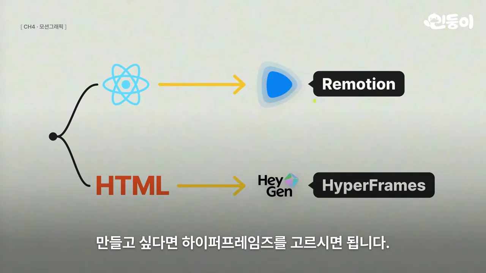
Claude Motion — 코드 없이 Claude 안에서
Claude에도 10월 8일에 Claude Motion이 나왔어요. 아래 화면은 자전거 공유 서비스 데이터를 대시보드로 만든 예시예요. 위쪽 숫자 칸과 아래 그래프들이 움직이는 영상이 돼요. 보고서 숫자는 움직이는 그래프로, 제품 사용법은 짧은 애니메이션으로 대화만으로 만들어요. 문구와 타이밍을 고친 뒤 MP4로 내보내요.
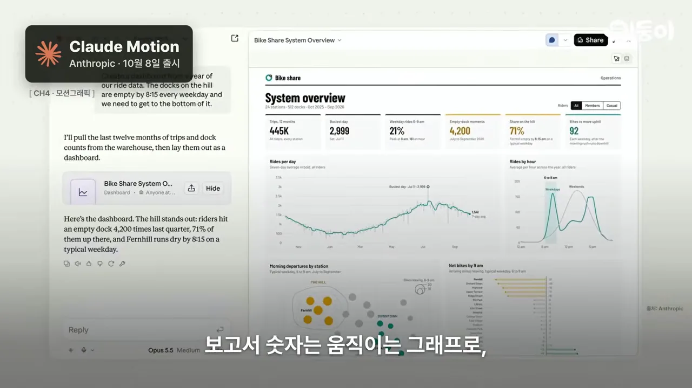
영상은 Runway와 연결하면 생성형 영상과 사운드도 붙일 수 있다고 해요. 다만 지금은 베타라 쓸 수 있는 요금제가 정해져 있어요. 아래 화면 위쪽 형광펜이 'Team and Enterprise'예요. 아래 카드 네 장 중 팀과 엔터프라이즈에서만 쓸 수 있고, 프로와 맥스에서는 아직 못 써요.
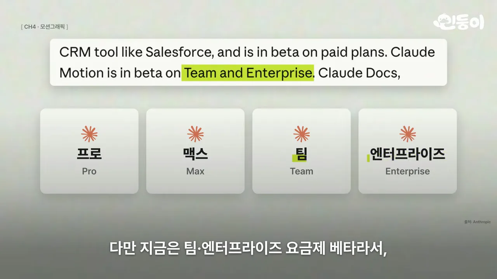
Awesome Opus 5.5 Videos — 프롬프트 모음
마지막은 Claude Opus 5.5로 만든 모션 그래픽, 3D 애니메이션, 직접 조작하는 게임 같은 장면을 프롬프트와 함께 모아 둔 깃허브 저장소예요. 아래 화면 타일 여섯 장이 그런 작품이고, 타일마다 아래에 프롬프트 줄이 붙어 있어요.
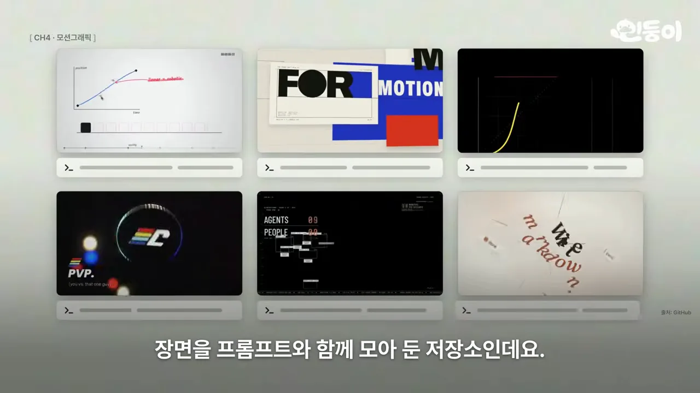
쓰는 법은 마음에 드는 작품의 프롬프트를 가져와 내 아이디어로 바꾸는 거예요.
무엇부터 고를까요?
영상의 결론은 14개를 전부 설치할 필요가 없다는 거예요. 웹사이트를 새로 만드는지, 이미 있는 디자인을 고치는지, 영상을 만드는지에 따라 필요한 것만 고르면 돼요.
아래 화면이 그 기준이에요. 왼쪽 컴퓨터 아래 '새로 만들기' 줄에 여섯 개, 오른쪽 공구함 아래 '고치기' 줄에 네 개가 있어요. 영상용 모션 그래픽 네 개는 이 두 줄에 없고, 넷째 챕터에서 고르면 돼요.
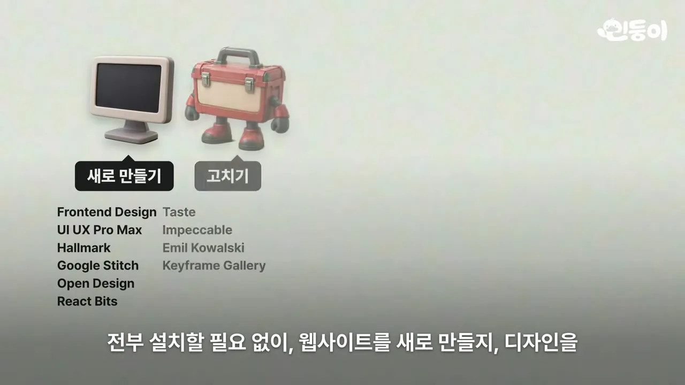
| 하려는 일 | 영상이 꼽은 도구 |
|---|---|
| 새로 만들기 | Frontend Design, UI UX Pro Max, Hallmark, Google Stitch, Open Design, React Bits |
| 고치기 | Taste, Impeccable, Emil Kowalski 스킬, Keyframe Gallery |
| 영상 만들기 | Remotion, HyperFrames, Claude Motion, Awesome Opus 5.5 Videos |
링크는 영상 마지막 화면에 한꺼번에 나와요. 도구 이름 아래 파란 글씨가 깃허브 저장소(소유자/이름)나 사이트 주소예요. Google Stitch, Keyframe Gallery, Claude Motion만 저장소가 아니라 웹사이트 주소예요.
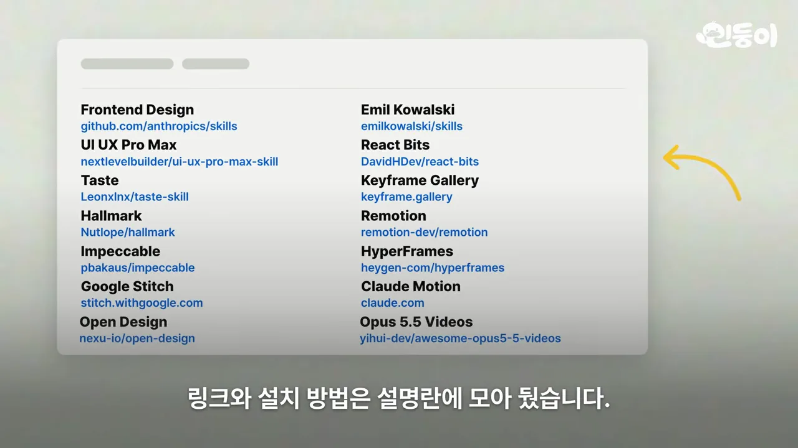